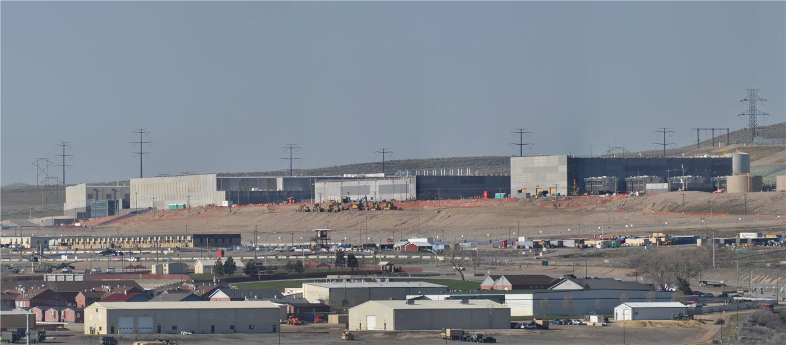

트럼프, AI 데이터센터 건설 지지 표명
도널드 트럼프 미국 대통령이 인공지능 데이터센터 건설을 적극 지지한다는 입장을 밝혔다. 일부 지역에서 제기되는 건설 반대 움직임에 대해서도 언급했다.
마약란 기자 · 2026.09.04
橋국제

트럼프 미국 대통령이 인공지능용 데이터센터 건설을 지지한다는 입장을 공개적으로 밝혔다. 전력과 용수 사용을 이유로 한 지역 단위의 반대 움직임이 여러 주에서 나타나는 가운데 나온 발언이다.
광고 문의 · 300×250AI 데이터센터는 대규모 전력과 냉각용 용수를 필요로 한다. 이 때문에 입지 후보 지역에서는 전기요금 상승과 지하수 사용을 둘러싼 논란이 반복돼 왔다.
산업계는 데이터센터가 세수와 건설 일자리를 가져온다는 점을 강조한다. 반면 운영 단계의 상시 고용 인원은 규모에 비해 많지 않다는 반론도 함께 제기된다.
전력망 문제도 남아 있다. 대형 데이터센터가 들어서면 해당 지역의 송전 설비 증설이 뒤따라야 하는데, 그 비용을 누가 부담하는지가 요금 체계와 직결된다.
미국의 데이터센터 투자 확대는 반도체와 전력 설비 수요로 이어진다. 한국과 대만의 관련 기업에는 수요 측 재료로 작용해 왔다.
다만 정치적 지지 표명이 곧 인허가 속도로 이어지지는 않는다. 미국의 데이터센터 입지 결정은 주와 지방정부의 권한 영역이 넓어, 연방 차원의 발언과 현장의 절차 사이에는 간극이 있다.